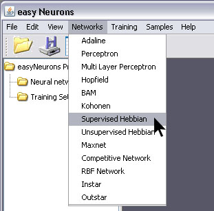
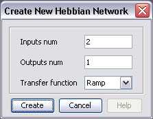
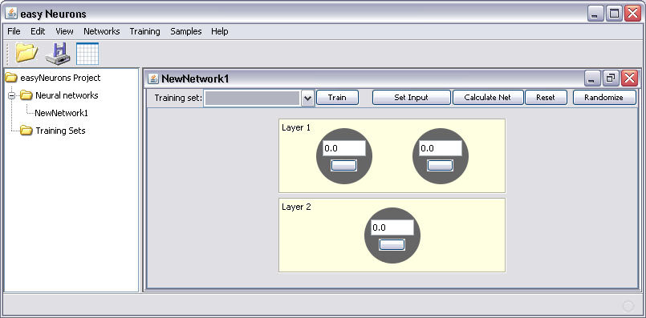
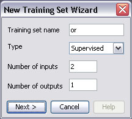
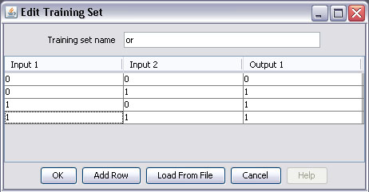
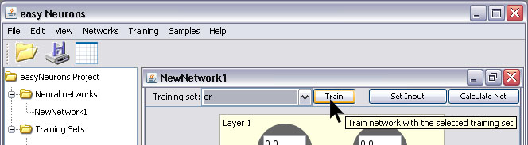
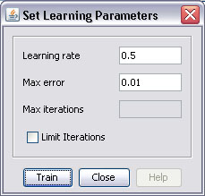
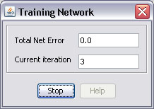
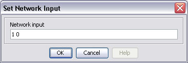
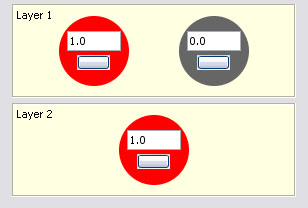

Supervised and unsupervised Hebbian networks are feedforward networks that use Hebbian learning rule. From the point of view of artificial neural networks, Hebb's principle can be described as a method of determining how to alter the weights between neurons based on their activation. The weight between two neurons will increase if the two neurons activate simultaneously,and it is reduced if they activate separately. [http://en.wikipedia.org/wiki/Hebbian_theory.htm]
To create and train Supervised Hebbian neural network with easyNeurons do the following:
Step 1. To create Supervised Hebbian network, in main menu click Networks > Supervised Hebbian

Step 2. Enter number of neurons in input and output layer, choose Ramp transfer function as shown on picture below and click Create button.

This will create the Supervised Hebbian neural network with two neurons in input, and one in output layer.

Now we shall train this network to learn logical OR function. First we have to create the training set according to OR truth table, and we will use supervised learning method.
Step 3. In main menu click Training > New Training Set to open training set training set wizard
Enter training set name, number of inputs, number of outputs as shown on picture below and click Create button.

Then create training set by entering training elements as input and desired output values of neurons in input and output layer. Use Add row button to add new elements or press Enter, and click OK button when finished.

Step 4. To start network training procedure, in network window select training set from drop down list and click Train button.

In Set Learning parameters dialog use default learning parameters, and just click the Train button.

When the Total Net Error is zero, the training is complete.

Step 5. After the training is complete, you can test network by using Set Input button. This opens Set Network Input dialog in which you can enter input values for network separated with white space.

The result of network test is shown on picture below. Network learned logical OR function,so the value of output neuron is 1. Test to see how the network behaves for other inputs.
